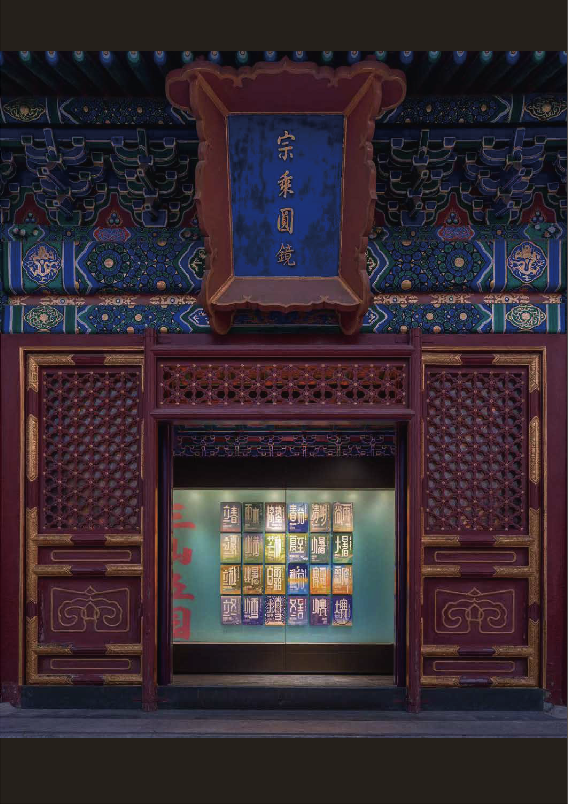
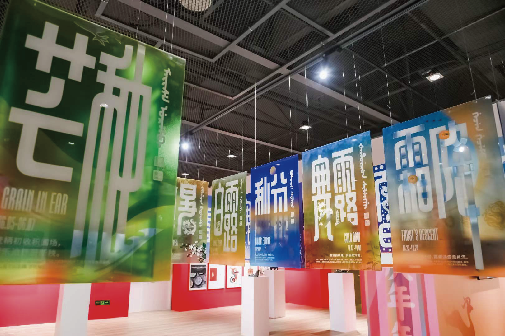

A Bold Fusion of Kaishu, Running Script, and Small Seal Script.
Shanghai Sky is inspired by Shanghai pattern characters from the Republic of China period, it reflects Shanghai’s traditional Chinese character aesthetics as well as the cultural tolerance and fashion of a cosmopolitan city. This font combines the different styles of Kaishu, Running Script, and Small Seal Script in a unique and bold fusion, and matches with Latin, Japanese Kana, and Manchu Script.
Credit of Shanghai Sky System
Type Design
LIUZHAO STUDIO
Hanzi Design
Zhao Liu, Kui Zhu, Xunchang Cheng, Yiwei Chen, Jingjing Dun, Yue Chen, Xicheng Yang, Peilin Song, Leyuan Dai, Zirongtai Li, Zhimu Li, Huati Wulan, Xiao Liang, Congyu Zhang
Latin Design
Xunchang Cheng
Manchu Design
Yiwei Chen
Technology Support
Kushim Jiang
Graphic Design
Chenming Zhang
Sheet 01 // Multi-script Symphony
Sinoform, Latin, Kana, and Manchu stroke equilibrium

Sheet 02 // Historical Roots
Pattern aesthetics of the Republic of China period reinterpreted

Selected Type in Use
Graphic Design System & Extensively Exhibited Archive

